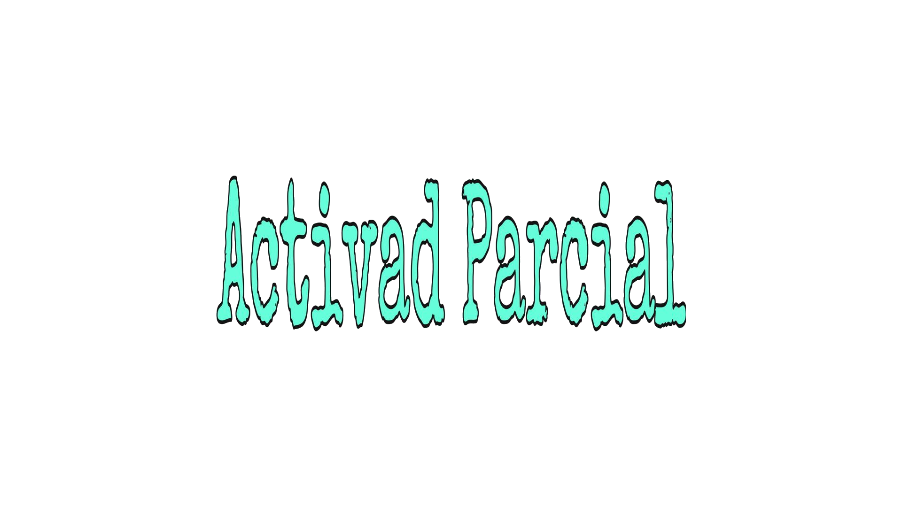
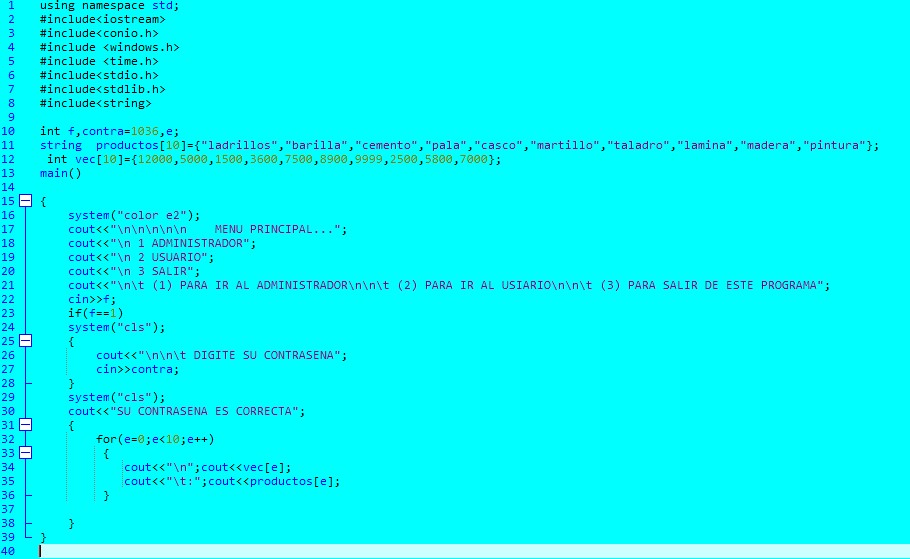
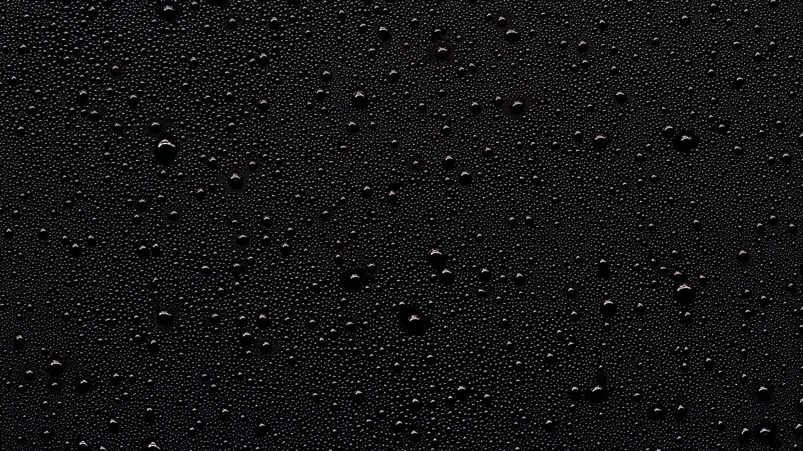
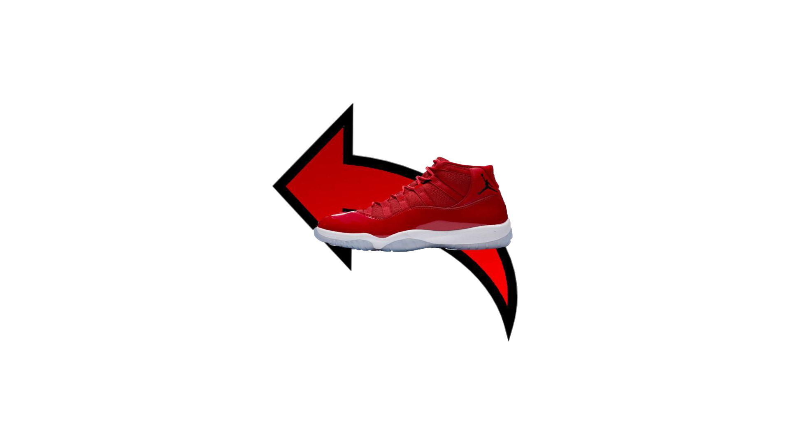

ESTE PARCIAL SE ME COMPLICO LA VERDAD, YA QUE C++ NO LO MANEJO A LA PERFECCION, AUNQUE ME GUSTAN LOS VECTORES Y LO QUE PODEMOS HACER CON ELLOS, SON DIVERTIDOS Y NOS SERVIRAN EN UN FUTURO, PERO EN CONCLUSION ESTA ACTIVADA NO ME GUSTO MUCHO...
